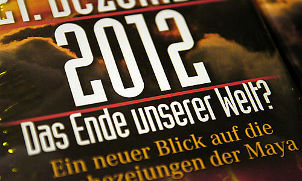
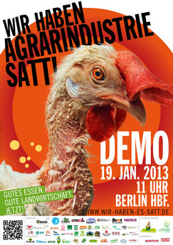

Das besondere Datum heute soll Anlass sein, zu fragen, ob die Zeit für einen Wertewandel wirklich schon reif ist?
Die deutliche Zunahme von Naturkatastrophen, Bankenkrisen und Hungersnöten sorgt leider nicht dafür,
dass grenzenloses Wirtschaftswachstum als gangbarer Weg von amtierenden Regierungen hinterfragt wird.
Die Hoffnung darauf, dass beschworene Katastrophen ausbleiben, ist schwer zu beseitigen.
Trotz alledem wird es heller werden... alle Jahre wieder.
In MV hat sich die Erwartungshaltung der Expertenkommission zum Masterplan gewandelt.
Gestern: MENSCH UND LAND (1.0) II. :
Der Masterplan Mensch und Land soll ein Beitrag zur Gestaltung einer nachhaltigen, umwelt‐ und tiergerechten Land‐ und Ernährungswirtschaft in Mecklenburg‐Vorpommern werden.
Heute: MENSCH UND LAND (2.0) II. :
Der Masterplan MENSCH UND LAND soll ein Beitrag zur Strategie „Gesundheitsland Mecklenburg-Vorpommern“ werden.
Donnerwetter, welch ein Wandel... könnte man denken.
Vor diesem Hintergrund macht es Sinn, die Frage "Wie viel Erde braucht der Mensch?"
(Arbeitsgruppe 2 ‚Der Mensch im Mittelpunkt‘) um einen Aspekt zu erweitern:
"Wie viel Erde braucht das Tier?".
Dazu verweise ich auf ein Interview mit dem ehemaligen Bundesumweltminister Klaus Töpfer
am Welternährungstag 2012:
„Töpfer: Wir wollen deutlich machen, welche wissenschaftlichen Erkenntnisse und welche Fakten vorliegen.
Verständlich machen, wie viele Böden wir durch unsere Art zu wirtschaften beanspruchen.
Welche Fläche beispielsweise für die Produktion eines Steaks verbraucht wird, im Vergleich zur Erzeugung eines Zentners Kartoffeln.
Die Bodenintensität verschiedener Nahrungsmittel ist sehr unterschiedlich, und es gibt Verfahren, das genau zu berechnen.
Deshalb wissen wir, dass wir in Deutschland allein im Jahr 2004 über den Import von Nahrungs- und Futtermitteln gut 60 Millionen Hektar Fläche beansprucht haben.“
Am Welternährungstag des Vorjahres teilte das Statistische Bundesamt mit, dass die von den Betrieben landwirtschaftlich genutzte Fläche im Jahr 2011 nur noch rund 16,8 Millionen Hektar, das sind 47 % der Gesamtfläche Deutschlands beträgt, von der 2 Millionen Hektar für Silomaisanbau verbraucht wurde (die achtfache Fläche des Kartoffelanbaus).
Maschinen und Tiere müssen gefüttert werden für weiter steigende Fleischexporte.
PS: „Brot für die Welt“ heißt es in der Weihnachtszeit im Vorfeld der Festtagsbraten.
[Anhang: <!-- ia0 -->fe9c8ddd8e.jpg<!-- ia0 -->]
Und zur Grünen Woche, wo dieser Masterplan sich zu einem Ganzen fügen soll, wird draußen vor der Tür verkündet werden:
„Wir haben Agrarindustrie satt!“
Wollen wir wirklich weiter auf Kosten anderer leben?
Das kann im Ganzen auf Dauer nicht gesund sein.
„Verantwortung für das Leben ist die wohl wichtigste ethische Leitlinie des Masterplanes“,
behauptet Arbeitsgruppe 3 (Nachhaltige Lebensstile, ethische Aspekte...).
Was zu beweisen wäre.

